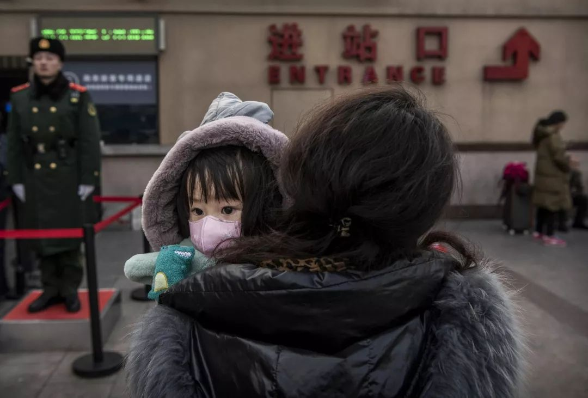

医护人员用文件袋自制护目镜——湖北县镇乡村防疫战
原文链接 备份链接 医疗防护资源不足是常态，各地资源调配需平衡，“灯下黑”区域渐次光亮，但少数地区的疫情宣传依旧不到位 外地务工返乡者最担忧的问题是年后经济收入断流、地域歧视，担心节后可能无法返工 本文首发于南方人物周刊 文 | 本刊记 …
以下文章来源于南方都市报 ，作者南方都市报

25日，武汉封城进入第三日。据不完全统计，湖北至少18个城市（县）已采取出入管控、限制市内交通等封城措施。
新型冠状病毒感染确诊速度迅速提高，近四日的新增病例从149人跃增至444人。累计病例已破千，从21日的440人，增长至23日的1287人。截至发稿时，确诊病例数还在进一步增加。
在疫源武汉，此前多位市民都告诉南都，已尽量采取戴口罩、家中消毒等防护措施，也已取消家庭聚会。
但武汉周边城市和农村，自我防护意识和防疫措施尚不乐观。
1月25日，人民日报官方账号也发文指出，新冠肺炎疫情防控形势严峻，但农村地区防控亟待关注。文章称，春节返乡人口多，农村医疗水平有限，农民防控意识相对较弱。据此，人民日报倡议要掌握人员动向、做好排查登记、避免人群聚集、做好入户宣讲检查。
虽然一些地区已采取防疫措施，但多位武汉以外地区的居民均向南都表示，周围居民戴口罩的比例并不高。一些村镇也没有对近期从武汉等地返回的人员，采取任何登记、检测体温、追踪，乃至隔离等措施。
此外，武汉市的定点医院已物资缺乏、人满为患，设施更加薄弱的周边县市医院亦面临物资短缺的困境。缺防护服、缺护目镜、缺手套、缺口罩……几乎每家医院都在发出这样的声音。

赶上武汉封城前最后一班车
23日凌晨2点，武汉市宣布将于当日早10点封城，机场、火车站离汉通道暂时关闭。何羡的姐夫赶着武汉封城前的最后一班车，从武汉回到了老家随州。
此后，湖北省十多个县市都开始采取出入交通管制的措施。
何羡说，武汉封城的通知出来的“很突然”，自己的舅妈为了赶在封城之前回到随州，差点去坐黑车，最终在家人的劝阻下才作罢。
直到武汉封城，何羡身边的人才意识到严重性。“封城通知出来之前，很多人还觉得戴口罩太夸张，是言过其实。”
何羡说，就在21日，身在随州老家的她还看见许多医用口罩静静地躺在药店里，无人光顾。23日武汉封城消息一出，随州的口罩、酒精、消毒液很快被抢购一空。
何羡的家离武汉车程两个多小时，不少亲朋邻居都从武汉赶回家过年。从外地回家的人费力讲疫情如何严峻形势，家里人却将信将疑。
“比如我大伯家，堂兄弟姐妹好像就完全没这个意识。”何羡无奈道。
据何羡描述，除了公共交通停运，暂时没有看到其他的公共卫生措施。她从外地买到了消毒液和酒精，家人出门回来都会消毒。
24日，随州市新型冠状病毒感染的肺炎指挥部办公室发布情况通报，通报显示至23日24时，随州市共收治发热患者493人，累计新型冠状病毒感染的肺炎疑似病例42例，其中新增15例。
落实网格化管理和入户排查、登记
22日，湖北省成立新型冠状病毒感染的肺炎疫情防控指挥部，进行专班统筹组织协调。在防控指挥部24日召开的会议上，湖北省委书记、省新型肺炎防控指挥部指挥长蒋超良提出，要落实网格化管理和入户排查、登记等防控措施，做好相关人员隔离留观和诊疗工作，并加强政策宣传，引导群众居家休息，做好自我防护。
湖北各州、市也成立了防控指挥机构，设置了定点医疗机构。英山县、宣恩县等均由各自的肺炎防控指挥部统一指挥领导防控工作。
比如，1月22日，咸宁市崇阳县政府组织实施《崇阳县新型冠状病毒感染的肺炎防控工作方案》，要求以最快的速度摸排返乡人员情况将返乡人员名单、手机号、回崇阳时间、密切接触人员名单等信息，上报乡政府汇总。并要求各乡镇组织重点人员，到本村村级卫生室测量体温，每天一测，持续时间不少于两周；县直各单位对武汉返乡干部职工一律在家监测体温。此外，各村的小卖部、超市、早点摊、卖菜摊，于1月24日晚6点年三十至大年初八停止营业，并且禁止各村搞玩龙灯、踩龙船活动。
村镇防疫措施有限，居民希望加强宣传
据百度地图慧眼-百度迁徙监控到的数据，1月22日，即武汉封城的前一天，迁入孝感的人口中，51.5%来自武汉方向。除了孝感，黄冈、鄂州、仙桃、咸宁、随州、黄石等地，当天也有超20%人从武汉方向迁入。

与此同时，武汉多个村镇的居民均向南都表示，目前当地对疫情采取的措施极为有限。
王先生几天前从武汉返乡过年，途径各个农村戴口罩的人并不多，“大概十个里有两个”。随着疫情的扩散以及信息的披露，据他观察，周围人带口罩的比例有上升趋势，但也仅达到“就10个里边4、5个”的程度。
虽然周边的人都在讨论疫情，在他看来，防范意识并没有跟上。他告诉南都，周围的邻居虽然大多会在家采取消毒措施，但多数都是用醋或普通的消毒液，比较不科学、不专业。
据华中科技大学武汉同济医院发布《新型冠状病毒肺炎诊疗快速指南》，根据对SARS冠状病毒和MERS冠状病毒的研究，冠状病毒对热敏感，保持56℃30分钟，乙醚、75%乙醇、含氯消毒剂、过氧乙酸和氯仿等脂溶剂均可有效灭活病毒。氯已定不能有效灭活病毒。
住在湖北恩施某村的小武不久前从武汉回村，“我从回家到现在十天整，没有收到过任何宣传、调查、登记。”她告诉南都，家人所在的村民群里，也仅有一些“不痛不痒”的信息。

“农村真的是宣传盲区，特别是湖北农村，真的是武汉返乡人群特别多的地方”。据她介绍，腊月二十九（23日）从武汉返乡的一些居民，仍在参加聚会，并未采取自我隔离措施。
住在黄石市大治市某镇的居民也告诉南都，当地几乎没有对疫情采取宣传措施，“大家都是看电视新闻知道的”。
一个好一些的消息是，一些地区较为及时的采取了相应措施。例如，枝江市在22日就发布了“致全市居民的一封信”，并在其中介绍，病毒危害，个人防护措施等。
当地一位居民也告诉南都，枝江市也会登记从武汉返回的人员。
武汉周边医院防护物资紧缺
1月24日晚上，和除夕的拜年祝福一同刷屏朋友圈的，还有这样一条消息：“武汉紧急求援！”
文中介绍：武汉多家医院物资紧张，可能只够维持3-5天，目前医院请求紧急支援。包括协和医院、同济医院等武汉市发热患者定点诊疗医院在内的多家医院请求外界捐赠医护人员急需的护目镜、口罩、防护服等防护物资。
物资紧缺的消息被多家媒体转载。武汉一家三甲医院的医生此前也告诉南都，因同事感染他要去顶班，但没有防护服，只能自行寻找、购买。
事实上，不仅武汉缺乏物资，和武汉一同封城的其他城市，也处在物资紧缺的境地。24日，孝感疾控中心发布公告，开启爱心捐赠通道接受防护物资。汉川、荆州等多地医院也对外发布了接受捐赠的信息。
武汉市的定点医院已经物资缺乏、人满为患，设施更加薄弱的周边县市医院情况如何？
1月22日，孝感第一人民医院的官网发布“安全大查房 重点加强对新型冠状病毒肺炎的防控工作”的新闻稿，文中照片显示，参与查房的医护人员身穿白大褂，在检查重点区域时才戴上了医用外科口罩。文章称，检查组“叮嘱医护人员要带好帽子、口罩、眼罩和防护衣，加强对自身的防护”。
湖北宜昌某医院的一名医生告诉南都，目前该医院急诊没有防护服，只能穿一次性手术服，且必须反复使用，护目镜、口罩等物资也紧缺。
“我们是一天发一只口罩，基本上还有三天就到没有口罩使用的状态了。”他说。
值得关注的是，除了防护物资，病毒检测试剂盒也处于紧缺状态。23日晚间，国家卫健委专家组成员高福在接受采访时，呈现了来自武汉一线医生发来的消息：收治的病人无法进行及时的病原检测，导致交叉感染存在。
封城后，各地网友纷纷转发医用物资短缺的消息。亦有网友自发成立物资对接群，希望帮助医院、患者寻找生产厂商、物流公司等。
接受南都采访的多位居民中，有人采取了自我隔离的措施，防止传染给家人；亦有人要求家人尽量呆在家，不要出门。但何羡说，家中老人仍然要出去串门，自己只能极力劝阻、做好消毒。
（文章采访对象为化名）
**南方都市报（nddaily）原创报道
**
南都记者 马嘉璐 宋承翰 蒋小天 实习生 马铭隆 李裕鸿
* 南方都市报（nddaily）原创内容未经授权，不得转载。
原文链接 备份链接 医疗防护资源不足是常态，各地资源调配需平衡，“灯下黑”区域渐次光亮，但少数地区的疫情宣传依旧不到位 外地务工返乡者最担忧的问题是年后经济收入断流、地域歧视，担心节后可能无法返工 本文首发于南方人物周刊 文 | 本刊记 …
原文链接 备份链接 27.01.2020本文字数：1285，阅读时长大约3分钟 导读：“请大家高度重视，都不要走亲串友，更不能让外人来我们村走亲戚，避免病毒交叉感染。” 作者 | 第一财经 邵海鹏 编辑 | 冯一龙 武汉疫情牵动着国人的 …
原文链接 备份链接 大家好，我是田静。 这几天因为新型冠状肺炎病毒，我恶补了一些相关书籍，再看网上真假难辨的信息，觉得阿尔贝‧加缪的《鼠疫》中说得很对：“我们每个人心里都有瘟疫，没有一个人，这世界上没有一个人是免除得了的。能够对抗瘟疫的， …
原文链接 备份链接 🎧 点击上方图片，跳转「故事FM」小程序，收听真人讲述。记得添加「我的小程序」，一键收听全部故事哟！ 本来在春节前的最后一期节目里，我预告说 故事FM 会放假一周，节后回来再见。 但是这个春节啊，我们团队都无心过年，大 …
原文链接 备份链接 *************▲************* 大批量新国标标准的口罩正进入嘉兴“心脏仓” 。 （新华社/阿里巴巴供图/图） 全文共*4420*字，阅读大约需要*10*分钟。 “缺口以万为单位”，武汉市汉口医 …